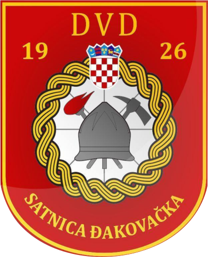

DVD Satnica Đakovačka
Početna
Novosti
Povijest
Ustrojstvo
Galerija
Intervencije
Vozni park
O nama
Ne mogu pronaći nigdje ništa, popravit ću kad odem u DVD! <3 :)
Prisloni ikonicu miša na logo našeg DVD-a za fora efekt!!
